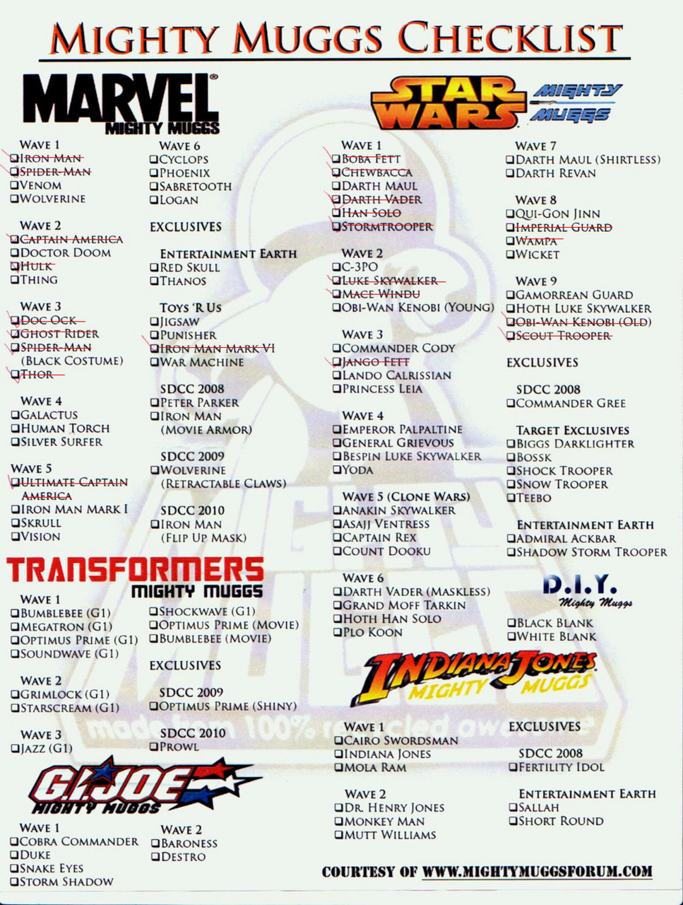

Mon, 16 Aug 2010 12:28:00 · MightyMuggs · Marvel · StarWars · IndianaJones · Transformers
mighty muggs checklist heres the checklist of

Mighty Muggs Checklist
Here’s the checklist of Mighty Muggs collections that I have so far. In case you’re wondering what the heck is Mighty Muggs, go visit http://www.mightymuggs.net/ ~
My b'day may already passed, but far be it for me to turn down any belated gifts [*hints hints…]. It’s never too late ;-)